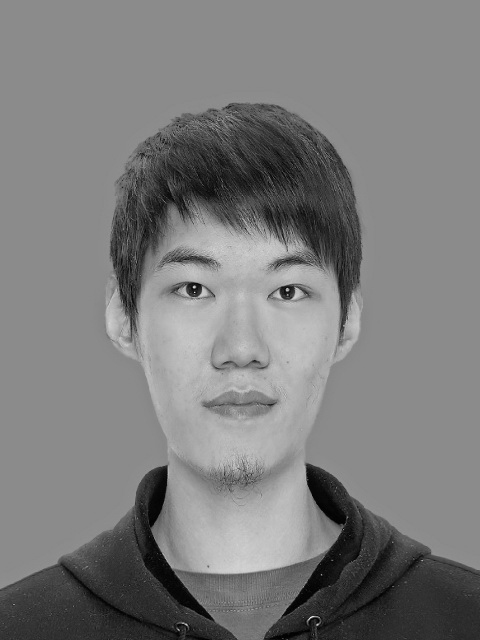
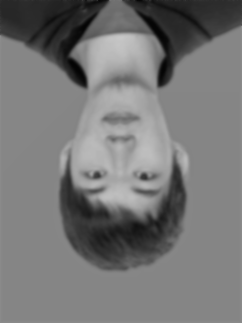

I used a empirical formula to change the original image into a grey image, which is grey=B*0.114+G*0.587+R*0.299, then I fliped the image by numpy calculation, and finally I blurred the image, replacing the original number by the average number of the nearby 8 pixels for 6 times.